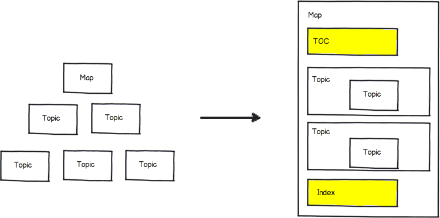
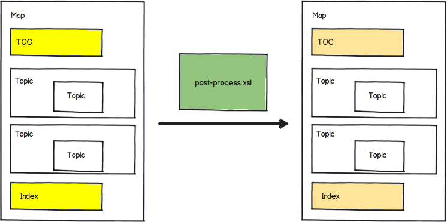
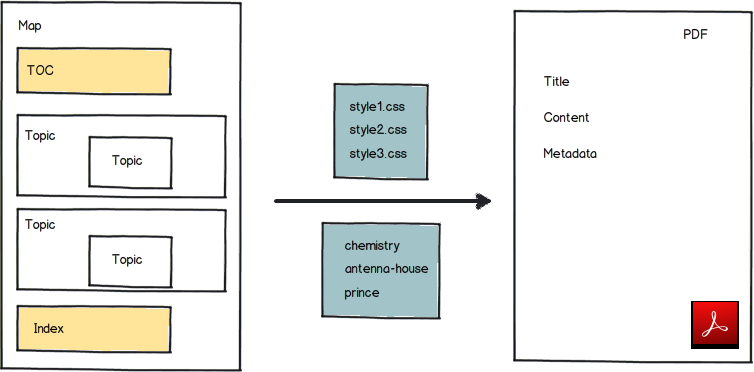

Technical Details
The DITA-OT CSS-based PDF Publishing Plugin comes bundled in the Oxygen XML Editor/Author distributions. The plugin ID is: com.oxygenxml.pdf.css. It is installed in the [OXYGEN-INSTALL-DIR]frameworks/dita/DITA-OT3.x/plugins/com.oxygenxml.pdf.css folder.
It has the following transformation types:
- pdf-css-html5 (DITA Map PDF - based on HTML5 & CSS transformation) - CSS styling applied over a merged HTML5 document (the merged DITA map converted to HTML5).
- pdf-css-html5-single-topic (DITA PDF - based on HTML5 & CSS transformation) - CSS styling applied over a merged HTML5 document (the merged DITA topic converted to HTML5).
This is how it works:
- It expands all the topic references into a temporary clone of the map, resolving keys and reused content. For the single topic transformation the result is a file with the keys and content resolved.
- It generates a structure for the table of contents and index. The result is a merged map
with all the references resolved. When transforming a single topic, the TOC and Index are
not added to the merged file, this includes only the contents of the topic.
 - Then it post-processes the merged map. It fixes some of the structure in the TOC and index,
moves the frontmatter and backmatter to the correct places, transforms any
change tracking and review processing instructions to elements that can be styled later,
etc. The result is another merged map.
Note: In the single topic transformation type (DITA PDF - based on HTML5 & CSS), these steps are simplified. - The merged DITA map or topic is transformed to a single HTML5 file.
The generated HTML elements copy the class attributes from the original DITA elements. In this way you can either use selectors that were designed for DITA structure, or ones for the HTML structure - see: Reusing the Styling for WebHelp and PDF Output. This step can apply customization XSLT extension points that change the default processing.
- In the last phase, it uses a collection of CSS files to style the merged map. References to
the CSS files are collected from the publishing template.
